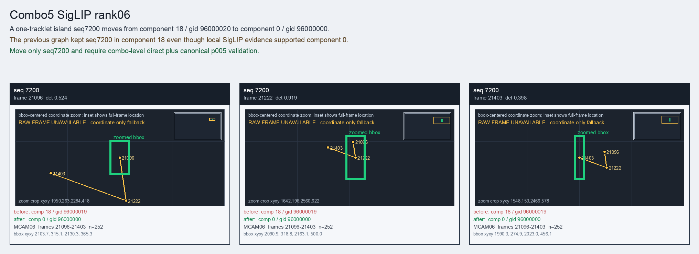

Combo5 SigLIP rank06
A one-tracklet island seq7200 moves from component 18 / gid 96000020 to component 0 / gid 96000000.
Before
component 18, gid 96000019, component_size 90
component 18, gid 96000019, component_size 90
After
component 0, gid 96000000, component_size 201, decision_status post_seq6257_combo_probe
component 0, gid 96000000, component_size 201, decision_status post_seq6257_combo_probe
Evidence
target_sim=0.6841, target_margin=0.0129, source_rest_margin=0.6362
Raw frame
unavailable_coordinate_fallback
target_sim=0.6841, target_margin=0.0129, source_rest_margin=0.6362
Raw frame
unavailable_coordinate_fallback
Failure and fix
Old failure: The previous graph kept seq7200 in component 18 even though local SigLIP evidence supported component 0.
New implementation: Move only seq7200 and require combo-level direct plus canonical p005 validation.
BBox evidence

Moved tracklets
| seq | video | gid | component | frames | dets |
|---|---|---|---|---|---|
| 7200 | vlincs_MS01_MC0001_MCAM06_2024-03-Tc8 | 96000019 -> 96000000 | 18 -> 0 | 21096-21403 | 252 |